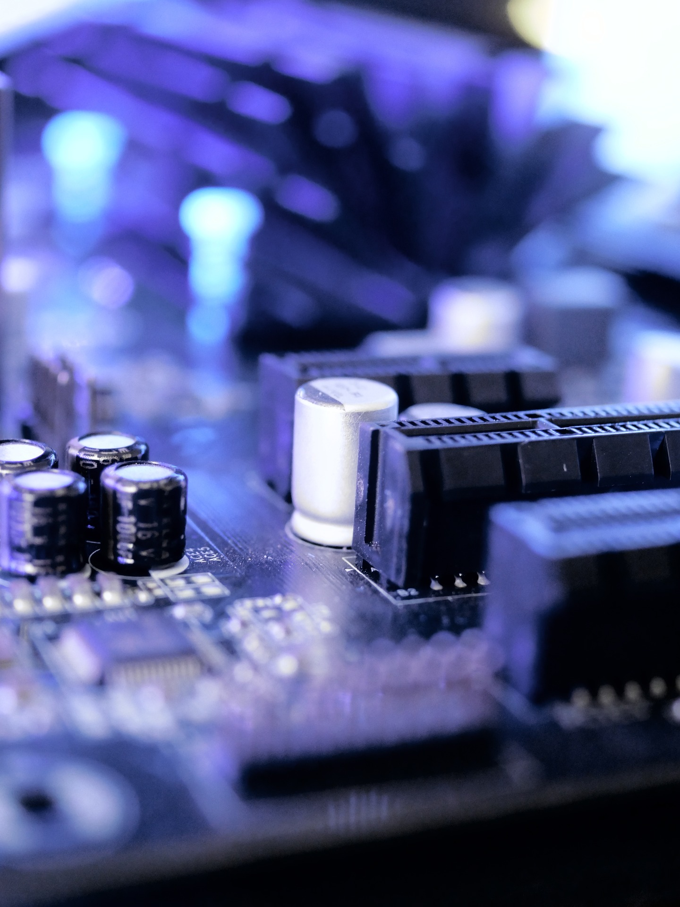

A pesar de mi edad se bastante sobre la computacion.

Monte mi primero ordenador a los 12 años y aprendi mi primer lenguaje de programacion a los 13, desde los 11 ya sabia muchisimo sobre la computacion.
La ingeniería informática es la rama de la ingeniería que agrupa el estudio de las ciencias computacionales con elementos de la electrónica, la electricidad y el software. Su propósito es implementar soluciones capaces de procesar la información de manera automática.
